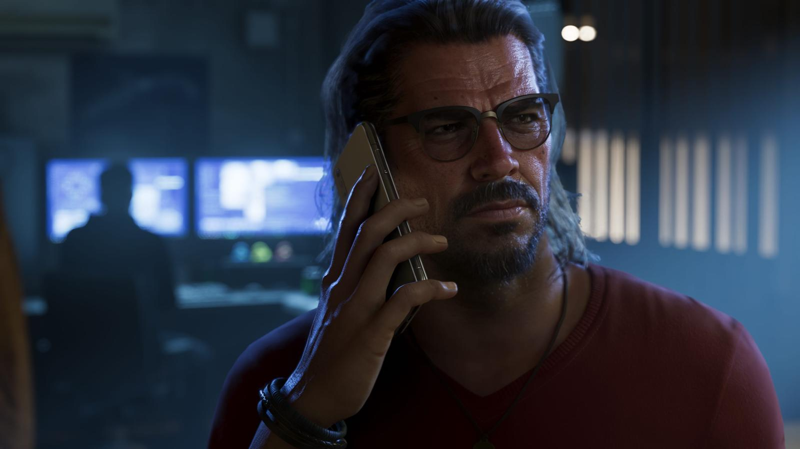
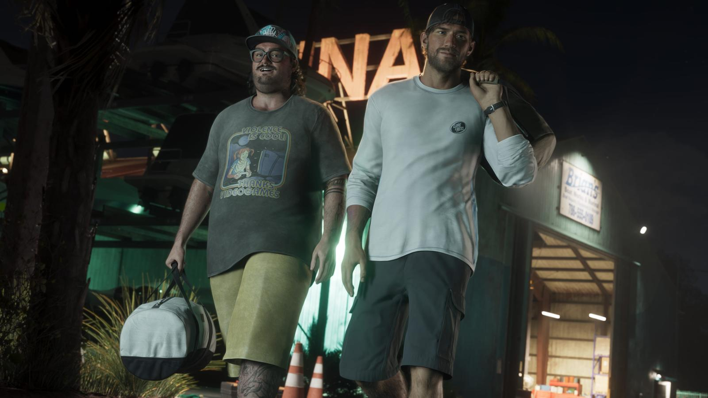

Сводка дня: 27 сентября 2026
Обновлено:

- До релиза — 53 дня, до предзагрузки — 46. 30 сентября счётчик покажет круглые 50.
- Бывший дизайнер открытого мира Rockstar: порт на Switch 2 «не имеет смысла», а вот телефон — технически возможен.
- В коде магазина Rockstar нашли почти полсотни вещей мерча: футболки Burger Shot, кепки, зажигалку Zippo, баскетбольный мяч.
- Бандла PS5 с GTA 6 пока нет. У Sony был только один бандл с GTA — в 2014 году.
- Через два дня — номер Game Informer с новыми кадрами.
Главное
Человек, который три года строил открытый мир GTA 6, говорит: скорее вы запустите игру на телефоне, чем на новой консоли Nintendo. Звучит как шутка — но за ней стоит вполне трезвый расчёт. Разбираем его и ещё три истории выходных: гору мерча в коде магазина Rockstar, загадку с бандлом PS5 и дату, которую фанаты уже обвели в календаре.
GTA 6 в кармане?
Что случилось: 25 сентября в подкасте Kiwi Talkz выступил Жереми Артвик (Jérémy Hartvick) — дизайнер открытого мира, который работал в Rockstar над GTA 6 с 2017 по 2020 год. Его спросили про версию для Nintendo Switch 2. Ответ получился резким:
«Не уверен, что это вообще имеет смысл: аудитория GTA 6 — не совсем аудитория Switch. Если ты фанат GTA, ты, скорее всего, купишь ту консоль, на которой выйдет игра».
Жереми Артвик, экс-дизайнер Rockstar (Kiwi Talkz, пересказ GamesRadar+)
И дальше — главный аргумент: зачем тратить силы на версию, которая будет работать хуже, если «любой купит PS5 ради твоей игры»? Слабое место Switch 2, по его словам, — процессор: симуляция огромного живого мира упрётся именно в него, и игру пришлось бы сильно урезать. При этом саму идею Артвик назвал не «совсем абсурдной».
А потом — поворот. Про смартфоны он сказал почти противоположное: «Если захотят, вы сможете играть в GTA 6 на телефоне — эта технология существует, и это доказано». Речь, судя по контексту, о мощных флагманах и облачном стриминге, а не о портировании на любой телефон.
Что это значит для игрока: ничего официального — Артвик ушёл из Rockstar шесть лет назад и говорит как эксперт, а не как представитель студии. Но его логика объясняет, почему на старте игра выходит только на PS5 и Xbox Series X|S. Откуда вообще взялся слух о Switch 2 и чем он закончился — в разборе Слух: GTA 6 выйдет на Nintendo Switch 2 одновременно с PS5.

Полсотни вещей в коде магазина
Что случилось: после анонса коллекционного набора дата-майнеры продолжили копать тот же каталог товаров магазина Rockstar — и расписали его по полкам. По подсчёту VGTimes, там лежат 15 футболок с логотипом GTA VI, ещё 9 футболок с брендами из самой игры, 14 кепок и 11 разных мелочей. Всего — почти полсотни позиций.
Самое любопытное — в «мелочах». По данным Destructoid, там есть зажигалка Zippo в стиле GTA, зажим для денег, сумка-шоппер, голографические наклейки и даже баскетбольный мяч. А среди «игровых» футболок замечен Burger Shot — сеть бургерных, которая кочует по вселенной GTA с 2004 года, со времён San Andreas.
Зажим для денег в мерче GTA — почти самоирония. В серии деньги всегда были главным «оружием»: в GTA V за всю сюжетку можно было заработать миллиарды на биржевых манипуляциях Лестера. Rockstar явно понимает, что её фанаты купят кошелёк с логотипом раньше, чем футболку.
Что это значит для игрока: пока ничего из этого не продаётся — статус 🟡. Коллекционка из той же утечки подтвердилась за несколько часов, поэтому шансы высокие. Если мерч выпустят, логично ждать его в один из «четвергов Rockstar». Как утечка сработала в прошлый раз — Слух: у GTA 6 будет коллекционное издание.
Коробка PS5 с Леонидой
Что случилось: на 27 сентября Sony не объявила официальный бандл PS5 с GTA 6. На странице игры в PlayStation Store — только сама игра за $79,99 и $99,99. Из «гташного» железа у Sony пока есть лишь лимитированные геймпады DualSense за $84,99.
Почему вопрос вообще всплыл? Потому что Sony в этом году впервые продаёт PS5 Pro в комплекте с игрой — EA Sports FC 26, с 22 октября в Европе, за €799,99. Для консоли, которую покупают ради «самой красивой картинки», это прецедент. В июле в сети писали, что маркетологи Sony и Rockstar обсуждали бандл именно с PS5 Pro — но официально это никто не подтвердил.
За всю историю у Sony был ровно один бандл с GTA: PS4 с GTA V за $399,99. Его объявили 14 ноября 2014 года и выпустили к «чёрной пятнице» — почти через год после начала продаж консоли. Так что даже если бандл с GTA 6 будет, по опыту Sony он может появиться не в день релиза, а позже.
Что это значит для игрока: если вы планируете покупать PS5 специально под GTA 6, торопиться ради бандла смысла нет — его нет. А в Великобритании оператор EE уже собрал свои наборы «консоль + игра», но это инициатива ритейлера, а не Sony. Как купить игру из России — Как купить GTA 6 в России.

Минус пятьдесят
Что случилось: в среду, 30 сентября, до релиза останется ровно 50 дней. Дата официального переноса на 19 ноября была объявлена 6 ноября 2025 года — с тех пор Rockstar ни разу её не сдвигала.
Для игроков 30 сентября — ещё и психологическая черта: дальше счёт идёт уже на недели. Семь недель до релиза, шесть до предзагрузки 12 ноября. Люди уже берут отпуска — и не по одному дню: как к 19 ноября готовятся игроки по всему миру, читайте в материале Отпуск ради GTA 6: как игроки готовятся к 19 ноября.
Что ждём дальше
- 29 сентября — номер Game Informer с новыми скриншотами. Разберём кадры, как только выйдет.
- 30 сентября — 50 дней до релиза.
- 1 октября — четверг. Проверим, продолжит ли Rockstar серию анонсов (и не будет ли там мерча).
- 19 ноября — релиз. Отсчёт с точностью до секунды — Отсчёт до GTA 6 в вашем часовом поясе.
А пока — вопрос на засыпку: в какой игре серии впервые появились Томми Верчетти и Лэнс Вэнс? Если ответили сразу — у нас есть тест для настоящих ветеранов.
Источники: GamesRadar+ (интервью Kiwi Talkz, 25.09.2026); Wccftech; VGTimes; Destructoid; gta6-life.com (история бандлов Sony); Notebookcheck (PS5 Pro + EA FC 26); PlayStation Store; Rockstar Games.